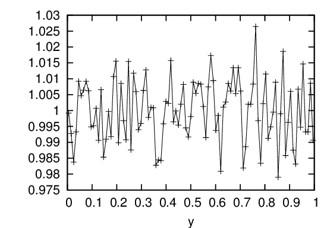
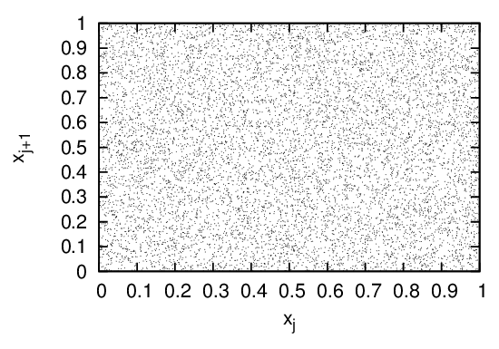

Generating random numbers that are uniform distributed in the range [0,1] is the basis for generating non-uniform distribution. Because the same program with the same input always produces the same output, it is not possible to write a program that produces truly random numbers. However, for most purposes, a pseudo-random number sequence will work almost as well. By “pseudo-random number”, we mean a repeatable sequence of numbers that has statistical properties similar to a random sequence. The most well-known algorithm for generating pseudo-random sequences of integers is the linear congruental method[4], in which the nth and (n + 1)th integers in the sequence is related by
|
| (134) |
where Mod is the remainder function, A, C, and M are positive integer constants. The first number in the sequence, which is called the seed value, is selected by users. Equation (134) can generate pseudo-random number that is uniform distributed in the range [0,M − 1]. The obtained sequence can be scaled by a factor of M − 1 to lie in the range [0,1]. Figure 12 plots the possibility density of 106 values returned by Eq. (134) with parameters A = 16807, C = 0, M = 2147483647 (this choice is called the Park and Miller method). In practice we need to use Schrange’s algorithm to avoid integer overflow[4].

Another way to visualize whether the values generated by the random generator are random distributed in the region [0,1] is to view how the points (xj,xj+1) are distributed in the two-dimension plane, as is plotted in Fig. 13.
